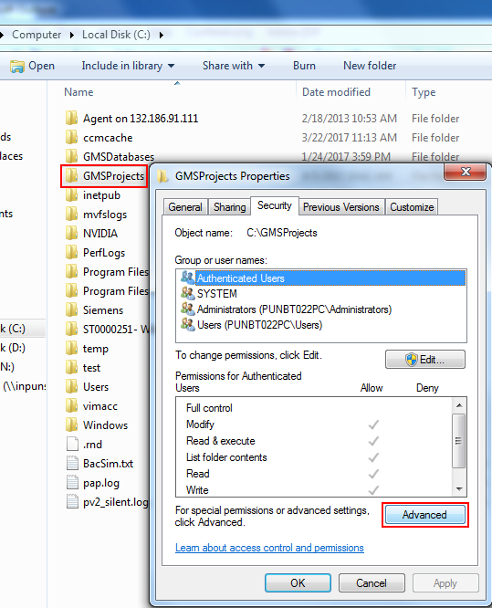
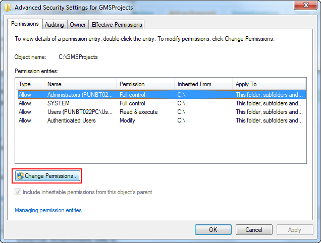
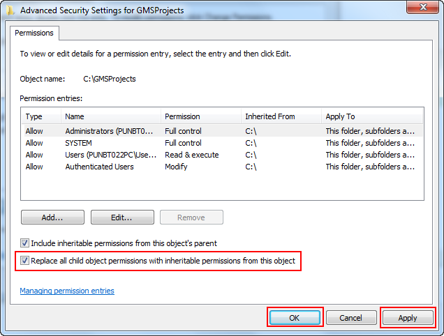

Unable to Set Security Permissions on Websites/Projects Folder
Problem: You want to create a website and the website creation fails or you want to share the project folder and the sharing fails. You have opened the SMC log and the SMC log displays: Unable to set security permissions.
Solution:
- On the Desigo CC server, in Windows Explorer, navigate to the GMSProjects folder.
NOTE: We recommend to set permissions on the parent folder of the project or Websites, thus solving the problem as one time activity. - Right-click GMSProjects folder, and select Properties.
- The [folder name] Properties dialog box displays.
- Select the Security tab and click Advanced.

- The Advanced Security Settings for [folder name] dialog box displays.
- In the Advanced Security Settings for [folder name] dialog box, click Change Permissions.

- A Windows Security message displays.
- Click Reorder.
- In the Advanced Security Settings for [folder name] dialog box that displays, click check box for Replace all child object permissions with inheritable permissions from this object.
- Click Apply.

- Security permissions are set.
- Click OK till you close [folder name] Properties dialog box.